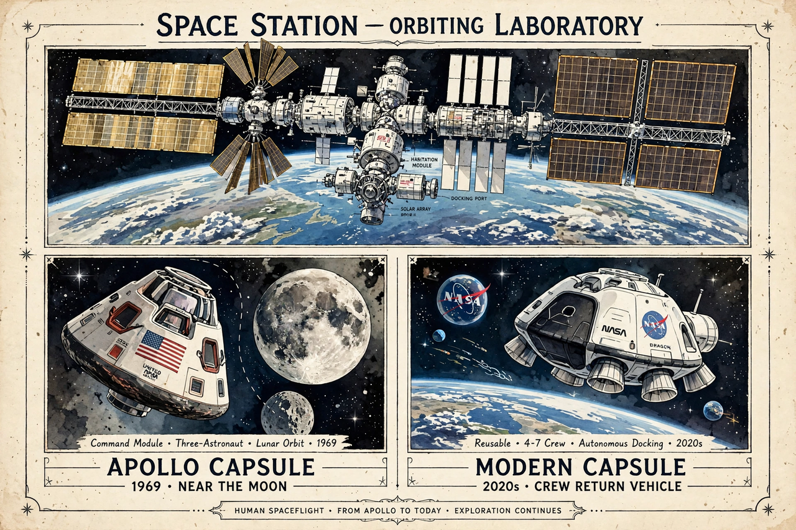

Spaceflight records
From Wikipedia, the free encyclopedia
| Spaceflight records | |
|---|---|
| scope | Human spaceflight superlatives |
| Longest single flight | 437 days — Valeri Polyakov |
| Most cumulative time | 878 days — Gennady Padalka |
| Most flights | 7 — Jerry Ross, Franklin Chang Díaz |

Records of the space age.Spaceflight records chronicle the extremes of human spaceflight. The endurance records are Russian-held from the station era: Valeri Polyakov's single flight of 437 days aboard Mir (1994–95) and Gennady Padalka's cumulative 878 days across five missions. The American marks — Peggy Whitson's 695 cumulative days and Frank Rubio's unintended 371-day single flight — trail by design of history: the US flew short Shuttle missions while Russia flew long station expeditions.
Speed and distance records still belong to Apollo: Apollo 10's crew reached 39,897 km/h in May 1969, the fastest humans have ever travelled; Apollo 13's crew holds the farthest distance from Earth, 400,171 km, set on its emergency free-return loop in 1970. The youngest spacefarer was Oliver Daemen (18, on Blue Origin's first crewed flight, 2021); the oldest, Ed Dwight — at 90, in 2024, sixty-three years after his astronaut candidacy was passed over — displacing William Shatner's mark.
Counting people
The number of humans who have reached space depends on the definition used (100 km FAI standard versus the US 50-mile standard) but stands in the high hundreds — a population that commercial flight is now growing monthly. The first spacewalker, Alexei Leonov, the most prolific, Anatoly Solovyev (16 EVAs), and the only person to fly in four decades-spanning programmes, John Young, anchor the table's human stories.
See also
Valeri Polyakov · Gennady Padalka · Peggy Whitson · Timeline of spaceflight · Kármán line